Top 10 melhores animações de animes!
Violet Evergarden
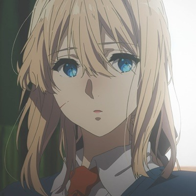
Com uma trama incrível, o anime "Violet Evergarden" se passa durante a Guerra e conta a história de uma
garota chamada Violet, que desde criança é vista como apenas uma arma humana pronta para ser usada.
O anime foi produzido pela Kyoto Animation e apresenta uma arte incrível, bem detalhada e muito bem
feita! O anime é a combinação perfeita: a história e a animação são espetaculáres!
Your name
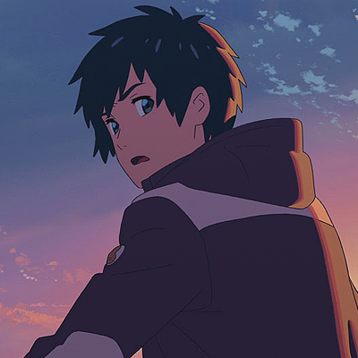
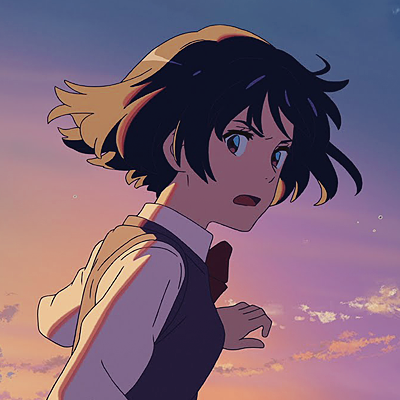
Também conehecido como Kimi no na wa, Your name é um dos filmes de animes favoritos da comunidade otaku!
Escrito pelo Makoto Shinkai e animado pela CoMix Waves Films, a história se trata de um garoto chamado
Taki e de uma garota que se chama Mitsuha. E, apesar deles não se conhecerem, eles estão fortemente ligados.
A animação do anime é muito bem feita! Ela contém muitos detalhes, movimentos e cores que combinam fortemente com a história do filme.
Fate/stay night: Unlimited Blade Works
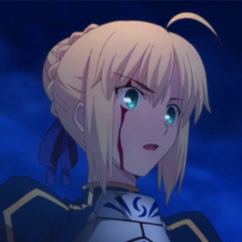
Fate/stay night: Unlimited Blade Works foi produxido pela Ufotable. O anime conta a história de dois estudantes
que acabam tendo que formar uma espécie de 'aliança' para poderem competir em um torneio extremamente secreto, o qual oferece
a posse do Cálice Sagrado como recompensa aos ganhadores.
Hyouka
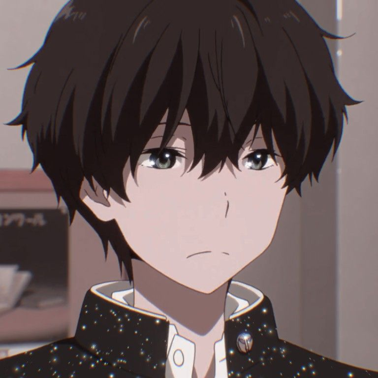
Produzido pelo Kyoto Animations, Hyouka conta a história de um estudante, Houtarou Oreki, que tinha como 'padrão de vida'
não gastar toda a sua energia. Com a mãe já falecida e com o pai e sua irmã sempre no exterior, seu modo de vida acaba ficando mais padronizado ainda.
A animação anime surpreende muitos otakus, que se encantam pela qualidade e diversidade de detalhes.
Shingeki no Kyojin
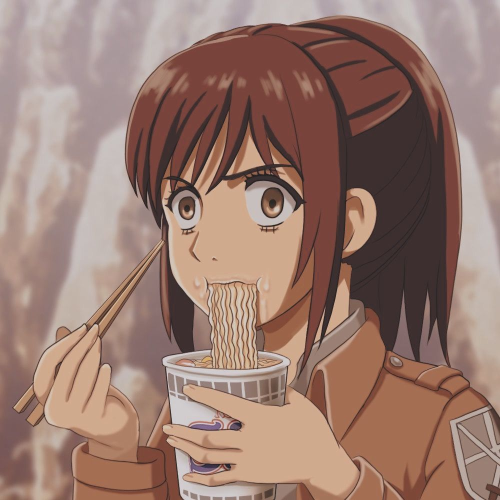
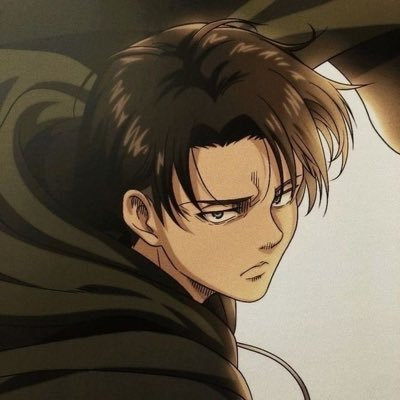
Também conhecido como Attack n titan, a série de mangá e anime se trata de um mundo onde
a humanidade vive dentro de cidades que são cercadas com a finalidade de proteção. Isso se deve ao fato
de, no mundo retratado, existir seres enormes que se alimentam por humanos chamados Titãns.
A animação é feita por Wit Studio e MAPPA. Além do fantástico enredo, a animação bem elaborada
chama bastante atenção.
Tenki no ko
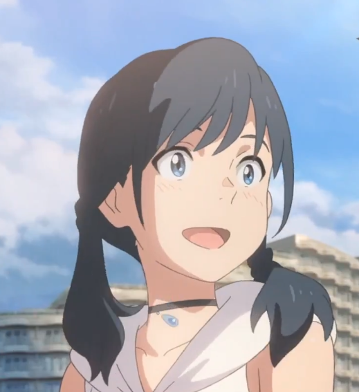
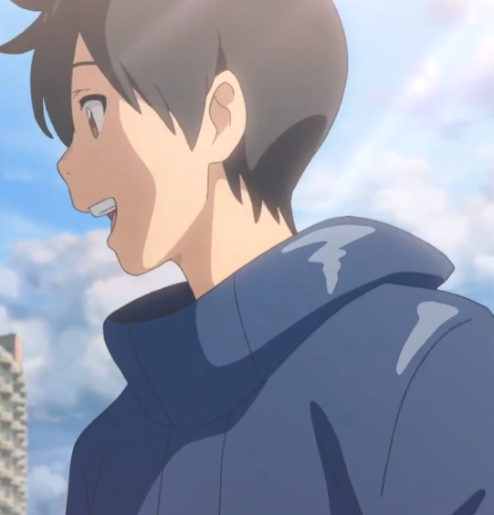
Também conhecido como Weathering with you, a história fala de um garoto que fugiu de uma cidade
no interior do Japão para ir morar em Tóquio. Porém, a vida na grande capital acaba não sendo tão fácil. Nessa, ele
conhece uma garota, que mais tarde revelaria ser a "Garota do Sol".
Produzida por CoMix Waves Films, a animação entra para hall das produções que são muito mais que um belo traço, estabelecendo criatividade, singularidade e profissionalismo a cada nova sequência em tela.
Kotonoha no Niwa
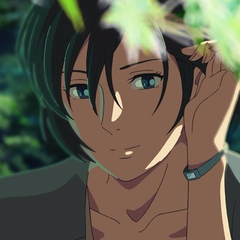
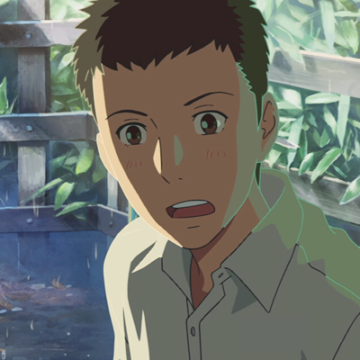
Também conhecido como The Garden of Words, o filme de animação japones conta
a história de Takao Akizuki, que quer ser um designer de sapatos com apenas 15 anos
de idade e Yakari Yukino, uma mulher que o encontra no Jardin Nacional Shinjuku Gyoen
todas as manhãs chuvosas.
A animação também foi feita pela CoMix Waves Films e eu acho que nem preciso dizer o
quão é incrível a animação, né?
Shigatsu wa Kimi no Uso
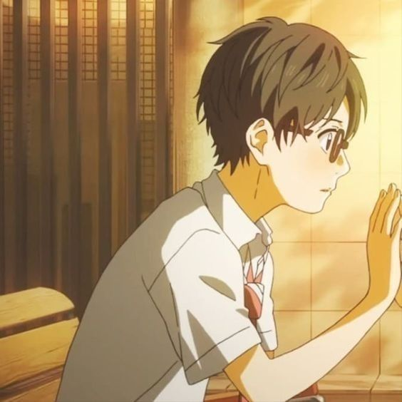
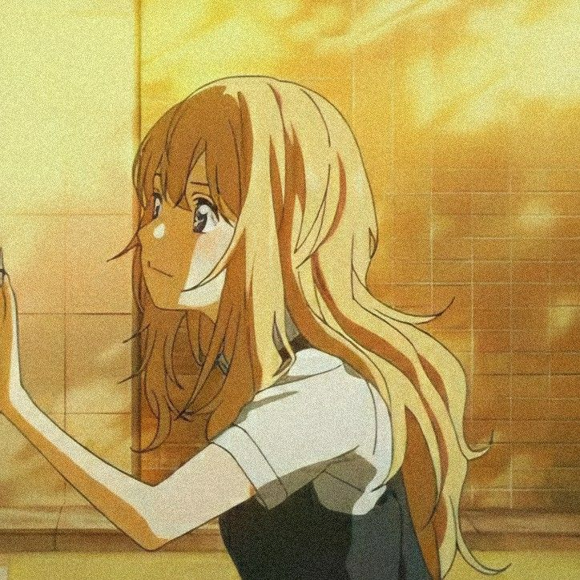
Também conhecido como Your lie in april, a série conta a história de um
pianista prodígio que ao perder sua mãe, perde totalmente a vontade de tocar e tem que
lidar com um terrível colapso mental. Mas, isso passa a ser diferente depois que ele conhece
uma violinista.
A animação foi feita pelo A1-Pictures e é simplesmente fantástica!
Tokyo Ghoul
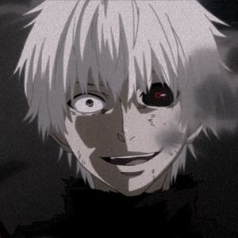
Se trata de uma série de mangá e anime, em que se passam em um mundo no qual em Tóquio há
criaturas conhecidas como ghouls, que vivem entre os humanos e os devoram.
A animação foi feita pelo Studio Pierrot e chama bastente atenção por sua qualidade.
Katsugeki! Touken Ranbu
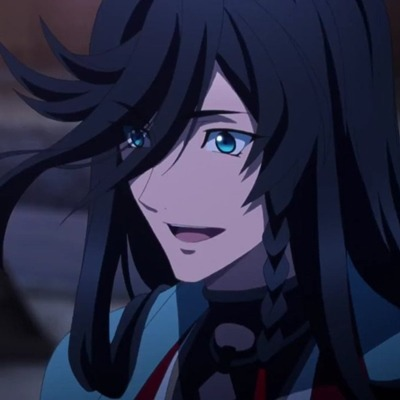
Se trata de uma série produzida pela Ufotable que se passa no ano de 1863 e o Japão está
dividido entre facções guerreiras. Na história, Jikan Sokogun para recuperar algo importante.
A animação é muita bem feita e rica em detalhes.